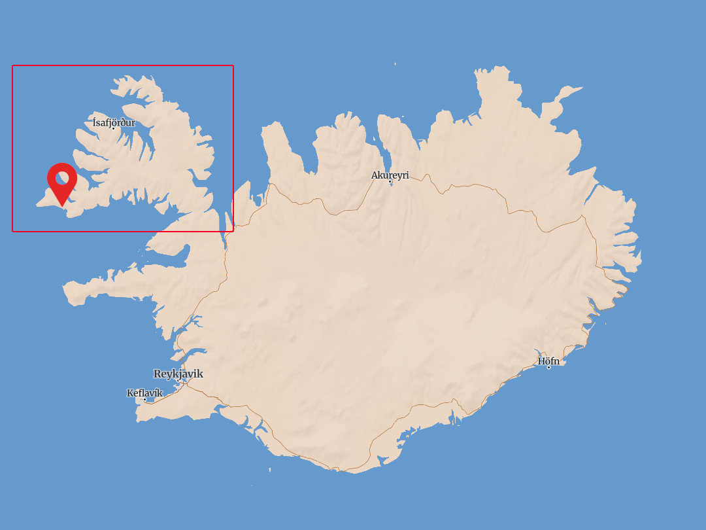

{% assign unix = site.time | date: '%s' %}
{% assign time = unix | plus: 0 | date: '%H:%M' %}
{% assign date = unix | date: "%Y-%m-%d" %} 

{% assign dotw = unix | date: '%w' | minus: 1 | modulo: 7 %}
{% assign ndotw = unix | date: '%w' | modulo: 7 %}
{% assign dotm = unix | date: '%d' %}
{% assign motw = dotm | minus: dotw %}

{% assign minutes = time | date: '%M' %}
{% if minutes > "45" %}
  {% assign time = unix | plus: 3600 | date: '%H:%M' %}
{% endif %}
<h2 style="margin-bottom: 1rem;">Opening Hours</h2>

{% assign today_times = site.times[dotw] %}
{% assign tomorrow_times = site.times[ndotw] %}
{% if time < today_times.open %}
  {% assign wait = today_times.open | minus: time %}
    Closed! Opening in {{ wait }} hour{% if wait > 1 %}s{% endif %}
{% elsif time >= today_times.open and time < today_times.close %}
  {% assign wait = today_times.close | minus: time %}
  Open! Closing in {{ wait }} hour{% if wait > 1 %}s{% endif %}
{% elsif time >= today_times.close %}
  {% assign wait = 24 | minus: time | plus: tomorrow_times.open %}
  Closed! Opening tomorrow in {{ wait }} hour{% if wait > 1 %}s{% endif %}
{% endif %}

<table class="timetable">
{% for time in site.times %}
<tr>
  {% assign day = forloop.index0 | plus: motw %}
  {% assign day = unix | date: "%Y-%m-" | append: day %}
  <td><b>{% if day == date %}<u>{% endif %}{{ day | date: '%a' }}{% if day == date %}</u>{% endif %}</b></td><td>{{ time.open }}-{{ time.close }}</td>
</tr>
{% endfor %}
</table>

<h2>Location</h2>
<div class="map">



</div>
